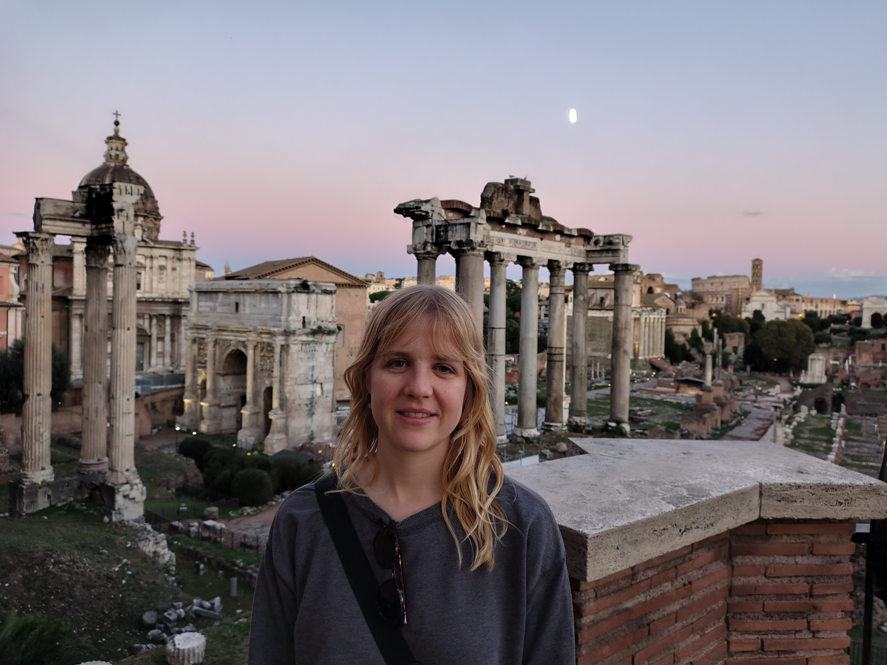

Since 2022 I am a PhD student at the University of Liverpool under the supervision of Daniel Meyer. My main interests are complex dynamics, especially Thurston theory, quasi-regular and quasi-conformal mappings and Sullivan's dictionary.
I did my Bachelor's and Master's degree at the University of Bern.
With Daniel Meyer Extending rational expanding Thurston maps arxiv.org/abs/2510.18015.
You can find my CV here.
Geometric and Functional Analysis Seminar, University of Helsinki, February 2026,
Dynamical Systems and Analysis Seminar, University of Manchester, February 2026
OU Dynamical Systems Seminar, The Open University, January 2026
Analysis Seminar, Stockholm University, November 2025
DKO Workshop and Summer School on Transcendental Thurston Theory, University of Manchester, August 2025
Holomorphic Dynamics Scheme 3 Meeting, The Open University, November 2024
Geometry Seminar, EPFL, Lausanne, November 2024
One Day Function Theory Meeting, UCL London, September 2024
Co-organised the One Day Function Theory Meeting of 2025 with Daniel Meyer. Find the programme here.
Co-founded and co-organised with Marco Fava the Liv'in Maths seminar, autumn semester 2023 and spring semester 2024. We organised weekly seminars given by local PhD students.
I have tought an interactive class about 4-dimensional regular convex polytopes aimed at high-school students with a focus on the work by Alicia Boole Stott. If you are curious I am happy to send you the slides and worksheet!
For a poster competition by the University of Liverpool's EDI committee I designed this poster.